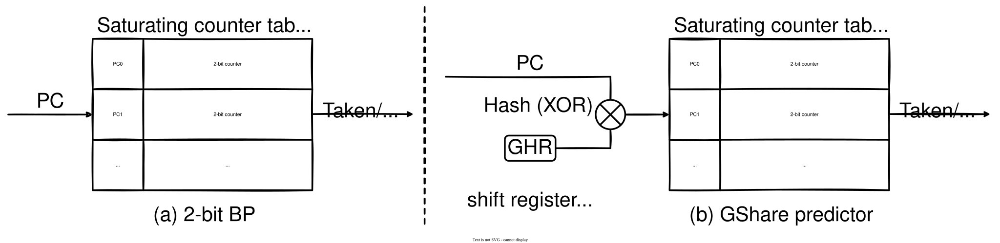

Part 3: Read Paper, Implement your own Perceptron BP
A Brief Introduction to 2-Bit Local BP and GShare Predictor
Before designing your own branch predictor, we first review two foundational dynamic branch predictors: the 2-bit local BP and the GShare predictor.

As shown in Fig (a) above, the 2-bit local BP contains a table of saturating counters. When a branch instruction is fetched, the BP indexes into the counter table using the instruction's PC. The BP predicts 'taken' if the counter value is 2 (10) or 3 (11), and 'not taken' if the counter value is 0 (00) or 1 (01). When the actual branch outcome is resolved, the corresponding counter in the table is updated: it is incremented by 1 (saturating at 3) if the actual outcome is 'taken', and decremented by 1 (saturating at 0) if 'not taken'.
However, the outcome of a branch is often strongly correlated with the outcomes of other recent branches. A local predictor that relies solely on a single branch's past behavior (like the 2-bit local BP) cannot capture these inter-branch correlations.
To leverage global branch history, the GShare predictor introduces a Global History Register (GHR), as shown in Fig (b) above. The GHR maintains a shift register where each bit represents the outcome of a recent conditional branch instruction (1 for taken, 0 for not taken). When a branch outcome is resolved, the GHR updates via a bitwise shift:
GHR = ((GHR << 1) | outcome) & GHR_MASK;
When indexing into the counter table, GShare XORs (hashes) the instruction's PC with the GHR. This hash ensures that global history is factored into table indexing, allowing the predictor to distinguish between different execution paths leading to the same branch.
A Brief Introduction to Perceptron BP
Now, we introduce the Perceptron Branch Predictor, originally proposed by Jiménez and Lin:
Jiménez, Daniel A. and Calvin Lin. “Dynamic branch prediction with perceptrons.” Proceedings HPCA Seventh International Symposium on High-Performance Computer Architecture (2001): 197-206.
The perceptron BP replaces traditional 2-bit saturating counters with artificial perceptrons. A perceptron is represented as a vector of signed integer weights (), where is a bias weight and correspond to the bits in the GHR.
- Prediction: Instead of checking counter thresholds, the BP selects a perceptron using the branch PC and computes the dot product of its weight vector and the GHR (treating GHR bits as and as ):
If , the BP predicts 'taken' (1); otherwise, it predicts 'not taken' (0).
- Training/Update: Once the actual branch outcome is known, the predictor trains the selected perceptron weights. A weight is incremented if the historical outcome matches , and decremented if it differs. To avoid overtraining, training only occurs if:
- The prediction was incorrect,
- The absolute value of the dot product is within a predefined threshold ().
Note: As part of this lab, you are required to read the paper cited above and summarize its key design in your report.
Designing and Implementing Your Own BP
In this part, you are required to design and implement your custom branch predictor in ChampSim. Your grade for this section will be based on correct functionality, architectural optimizations, and relative performance ranking.
Design Freedom & Ideas
You can implement the baseline perceptron predictor described in the paper, or explore advanced variations to achieve better branch accuracy and CPU IPC, such as:
- Hyperparameter Tuning: Finding the optimal global history length , number of perceptrons, and training threshold .
- Improved Hashing Functions: Designing better PC/GHR hashing logic to mitigate aliasing/collisions.
- Hybrid & Local History: Combining global branch history with local history tables (e.g., Perceptron with Local History).
- Weight Quantization & Budget Limits: Managing weight bit-widths effectively.
Starter Skeleton
We have provided a code skeleton under the branch/your_perceptron/ directory (your_perceptron.h and your_perceptron.cc). You need to fill in the missing logic in ChampSim's interface functions:
initialize_branch_predictor(): Allocate your predictor tables/structures and initialize GHR, weight vectors, and thresholds.predict_branch(): Select the predictor entry, compute prediction logic (e.g., dot product), and return1('taken') or0('not taken').last_branch_result(): Train predictor weights/counters based on prediction correctness and threshold criteria, then update the branch history.
If you are unsure how to manage branch history or table indexing in ChampSim, you can check built-in predictors in the branch/ directory (such as gshare/ or hashed_perceptron/) for reference.
Compiling and Running
To compile ChampSim with your custom BP, update "branch_predictor": "your_perceptron" in lab2_config.json, then build and run:
# 1. Update lab2_config.json to set "branch_predictor": "your_perceptron"
./config.sh ./lab2_config.json
make -j $(nproc)
# 2. Run test traces
bin/champsim --warmup-instructions 20000000 --simulation-instructions 100000000 ../trace/shell_sort.champsimtrace.xz
bin/champsim --warmup-instructions 20000000 --simulation-instructions 100000000 ../trace/spfa.champsimtrace.xz
Your implementation will be evaluated using both the public traces (shell_sort, spfa) and additional hidden evaluation workloads. Total points for this part consist of:
- Basic Functionality & Correctness (70%): Correctly implementing a working predictor that successfully completes all simulation runs without crashes and surpasses the
simple_bpbaseline. - Performance Ranking & Optimization (30%): Graded competitively based on your predictor's Branch Prediction Accuracy (MPKI) and CPU IPC against your peers on the benchmark suite:
- Top 10% Performance: Full ranking score.
- Above Average: High performance score.
- Base Perceptron Baseline: Standard performance score.
Please evaluate your implemented your_perceptron predictor against all baselines.
In your report, please include:
- Paper Summary: A concise summary (1–2 pages) covering the motivations, key challenges, and perceptron design/training mechanisms described in the Jiménez & Lin paper.
- Custom BP Design Details: Explain your specific implementation, architectural choices, hashing logic, parameter selections (, table sizes), and any extra optimizations you added.
- Performance Evaluation & Comparison: Figures or tables comparing Branch Prediction Accuracy / MPKI and CPU IPC of your
your_perceptronagainstsimple_bp,bimodal,gshare, andhashed_perceptronacross the tested workloads.
Files to submit:
- Source code: Files under
branch/your_perceptron/(your_perceptron.handyour_perceptron.cc). - Lab report: PDF file including the paper summary, design details, and performance analysis.